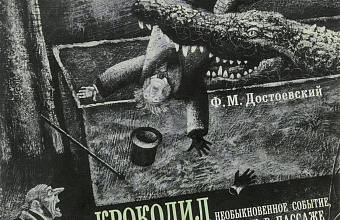

"Крокодил" — это небольшой рассказ Фёдора Михайловича Достоевского, написанный в 1865 году. Он является частью сборника "Дневник писателя" и представляет собой необычную и загадочную историю о человеке, который потерял смысл жизни и оказался в заложниках у собственных иллюзий и страхов.
Рассказ повествует о "молодом человеке", который живет в постоянной скуке и отчаянии. Он чувствует себя беспомощным и одиноким перед лицом жизни. Однажды он влюбляется в женщину, но его чувства оказываются безответными. Он начинает ревниво следить за ней и одержим мыслью о том, что она его предала. В свою очередь, она любит другого, что еще больше усугубляет его страдания. Он теряет рассудок и начинает видеть всюду "крокодила", который его преследует и олицетворяет его страх и отчаяние. В конце рассказа "молодой человек" остается один на один со своими беспокойствами и не может найти путь к смыслу жизни. Он остается в заложниках у своих иллюзий и не может справиться с своими страхами.
Жертва отчаяния: "Женщина" - предмет любви "молодого человека". Она - символ недостижимого счастья, которое он не может получить.
Символ отчуждения:Она не отвечает на чувства "молодого человека", тем самым усиливая его одиночество и отчаяние.
Предмет ревности: "Молодой человек" - это символ потерянной души, которой не хватает смысла в жизни. Он остается один на один со своими беспокойствами и не может найти путь к счастью.
Жертва своих иллюзий: Он погружается в свой внутренний мир, не замечая реальность. Он видит "крокодила", который олицетворяет его страхи, но не может справиться с ними, поэтому остается в заложниках у своих собственных фантазий.
Недоступный идеал: "Женщина" - предмет любви "молодого человека". Она - символ недостижимого счастья, которое он не может получить.
Символ отчуждения: Она не отвечает на чувства "молодого человека", тем самым усиливая его одиночество и отчаяние.
Предмет ревности: Она является предметом ревности "молодого человека", что подчеркивает его неуверенность в себе и неспособность принять отказ.
Внутренний демон: "Крокодил" - это не просто зверь, а символ всех страхов и беспокойств "молодого человека". Он является олицетворением его внутренних демонов, с которыми он не может справиться.
Символ отчаяния: "Крокодил" - это символ отчаяния и неспособности "молодого человека" принять реальность и справиться со своими проблемами.
